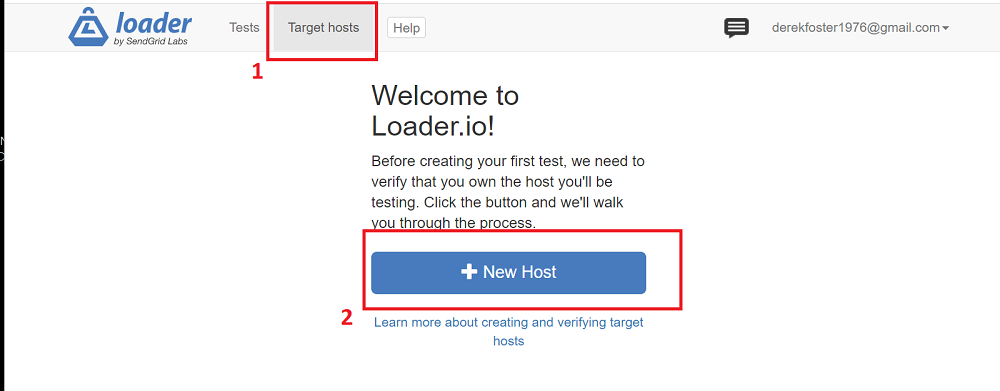
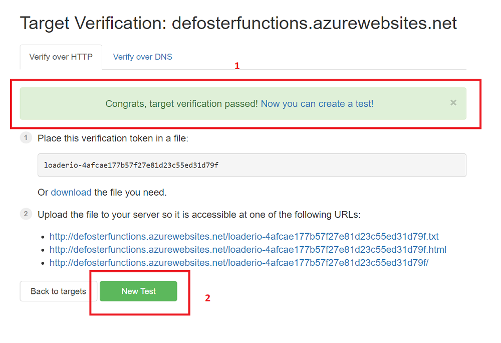

In this week's workshop you will learn how to carry out an important DevOps task for load testing your Azure HTTP Trigger function. Load testing cloud services is an important practice and demonstrates the performance and reliabuility characteristics of your service.
This is the last workhop that can contribute toward your assessment work. It does not involve building any cloud services, instead it is focused on setting up and running load-testing on your HTTP Trigger function.
In order to be able to load test a cloud service, you need another service that can repeatedly send GET or other HTTP queries to it. The load testing can be configured for a specific number of users hitting your function over a specififed time. For example you may want to test your service with 1000 simulated users of a period of 60 seconds. When such a test completes you will have a graph of your services performance, which includes latency (response time) and any dropped requests. To get started, signup for the free version of the loader.io service here:
Now you need to add the URL of your function as the target to load test against. If you aren't already, sign in to your loader.io account you just created then select the Target hosts tab and then New Host button:

You will be presented with a box highlighted below that you need to paste your URL function into:
Leave the loader.iop web page open for now. To get your function URL, login into the Azure portal here and go to All Resources and select your function app from the list (it may be named differently from below):
Now follow the steps below to copy your function URL and paste it to a text file to use later:
Copy on the main URL part of your function url, without the path, similar to below so it ends in .net:
https://defosterfunctions.azurewebsites.net
Now paste your URL into the loader.io web page you left open earlier then click the verify button:
You will now be presented with a unique verification token as highlighted below. Please copy this token to a text file as you will need to use it in your HTTP trigger code. The verification token is designed to stop you from being able to perform load testing on services that you do not own and helps to stop DDOS attacks.
OK, now leave the loader.io page open and open your HTTP Trigger project code in VSC:
With Azure Functions Proxies, you can specify endpoints in your Function App which aren’t handled by Functions directly but redirect the requests to other endpoints or respond with a hard-coded response. The latter is exactly what we need.
Create a proxies.json file in the root folder of your Function App in VSC:
Now paste in the code below in the proxies.json file:
{
"$schema": "http://json.schemastore.org/proxies",
"proxies": {
"loaderio-verifier": {
"matchCondition": {
"methods": [ "GET" ],
"route": "/"
},
"responseOverrides": {
"response.body": "",
"response.headers.Content-Type": "text/plain"
}
}
}
}
Now you will need to add the verify token you pasted into a text file earlier, add the token to the route and response.body values as shown below:
Nearly there!
Open the IoTHubTrigger.csproj file as shown below and add the below code snippet:
<None Update="proxies.json">
<CopyToOutputDirectory>PreserveNewest</CopyToOutputDirectory>
</None>
Next, you need to republish your function so the token you added is part of your published code. You will then be able to verify the token and run load balancing tests on your function.
As you already have a function app deployed with your HTTP Trigger, you are simply going to overwrite the code and not create a brand new function app:
You will need to be signed into Azure from within VSC for this, please refer to part 3 of workshop 1 on how to do this:
You now select your existing Function App that is already deployed on Azure, doing this means your function code will simply overwrite the code currently deployed:
Select yes to deploy and overwrite:
Your updated HTTP Trigger code will now be deployed to Azure, it should only take a minute or two:
Now return back your the loader.io web page you left open and click the verify button to see that the token has been deployed as part of your function. You should see a green box that states verification has passed. Click the New Test button when ready:

When you click the New Test button, you will configure a load test for your HTTP Trigger function that must include the function URL and the path component from the URL. Before you do anything you will see the test configuration window as below:
To keep things simple we will leave most of the settings as they are. The default settings will basically create a load test that uses 250 simulated clients to call your HTTP Trigger function over the course of 1 minute. This essentially aims to emulate 250 users calling your function over the period of 1 minute. You only need to add two pieces of information to the configuration window. First, give your test a name, second you need to fill the Path part of the URL. The path of your HTTP Trigger is whatever follows the basic part of your URL:
Full funtion URL: https://defosterfunctions.azurewebsites.net/api/GetTemperature?
Host URL: https://defosterfunctions.azurewebsites.net
Path: api/GetTemperature?
When you click the Run Test button your load test will first take a moment to prepare then it will launch 250 clients to call your HTTP Trigger function over a 1 minute period. The graph and stats will show you the response times and any timeouts. Timeouts are usually an indication the service has been overloaded. Hopefully your graph and response times may look similar to below.
You can experiment with running the test with 500 clients and view any differences in response times and the graph. Bear in mind you may reach some hard limits with your HTTP Trigger as it is currently deployed under the free tier.